Dibuat oleh: ukaasyah fathur riziq
TEMA PERTANIAN
Seseorang yang sedang bertani
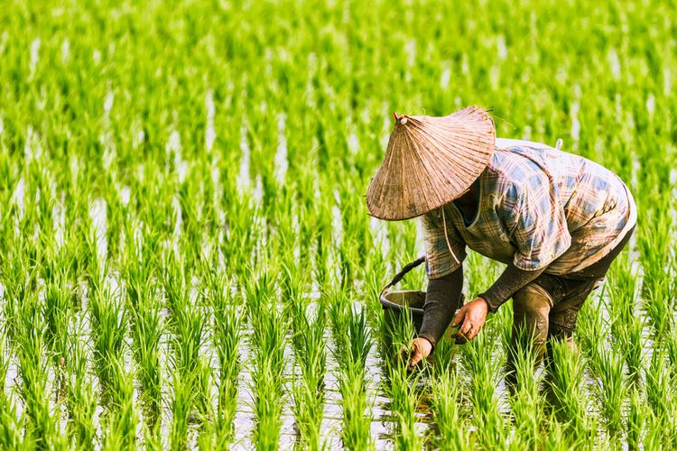
Kunjungi halaman ini
PENGERTIAN PERTANIAN
Pertanian adalah kegiatan pemanfaatan sumber daya hayati yang dilakukan manusia untuk menghasilkan bahan pangan, bahan baku industri, atau sumber energi, serta untuk mengelola lingkungan hidupnya. Kegiatan pemanfaatan sumber daya hayati yang termasuk dalam pertanian biasa dipahami orang sebagai budidaya tanaman atau bercocok tanam serta pembesaran hewan ternak, meskipun cakupannya dapat pula berupa pemanfaatan mikroorganisme dan bioenzim dalam pengolahan produk lanjutan, seperti pembuatan keju dan tempe, atau sekadar ekstraksi semata, seperti penangkapan ikan atau eksploitasi hutan. Bagian terbesar penduduk dunia bermata pencaharian dalam bidang-bidang di lingkup pertanian, namun pertanian hanya menyumbang 4% dari PDB dunia. Kelompok ilmu-ilmu pertanian mengkaji pertanian dengan dukungan ilmu-ilmu pendukungnya. Karena pertanian selalu terikat dengan ruang dan waktu, ilmu-ilmu pendukung, seperti ilmu tanah, meteorologi, teknik pertanian, biokimia, dan statistika juga dipelajari dalam pertanian. Usaha tani adalah bagian inti dari pertanian karena menyangkut sekumpulan kegiatan yang dilakukan dalam budidaya. "Petani" adalah sebutan bagi mereka yang menyelenggarakan usaha tani, sebagai contoh "petani tembakau" atau "petani ikan". Pelaku budidaya hewan ternak secara khusus disebut sebagai peternak.
Pertanian dalam pengertian yang luas mencakup semua kegiatan yang melibatkan pemanfaatan makhluk hidup (termasuk tanaman, hewan, dan mikrobia) untuk kepentingan manusia. Dalam arti sempit, pertanian diartikan sebagai kegiatan pembudidayaan tanaman.
Usaha pertanian diberi nama khusus untuk subjek usaha tani tertentu. Kehutanan adalah usaha tani dengan subjek tumbuhan (biasanya pohon) dan diusahakan pada lahan yang setengah liar atau liar (hutan). Peternakan menggunakan subjek hewan darat kering (khususnya semua vertebrata kecuali ikan dan amfibia) atau serangga (misalnya lebah). Perikanan memiliki subjek hewan perairan (termasuk amfibia dan semua non-vertebrata air). Suatu usaha pertanian dapat melibatkan berbagai subjek ini bersama-sama dengan alasan efisiensi dan peningkatan keuntungan. Pertimbangan akan kelestarian lingkungan mengakibatkan aspek-aspek konservasi sumber daya alam juga menjadi bagian dalam usaha pertanian.
Ada berbagai jenis tanaman pertanian yang dibudidayakan di seluruh dunia, dan pilihan jenis tanaman ini sangat dipengaruhi oleh iklim, tanah, dan permintaan pasar di masing-masing wilayah. Berikut adalah beberapa jenis tanaman pertanian yang umumnya ditanam:
- Padi: Padi adalah tanaman pokok yang merupakan sumber utama makanan bagi sebagian besar populasi dunia, terutama di Asia. Padi tumbuh di daerah berawa dan memerlukan banyak air.
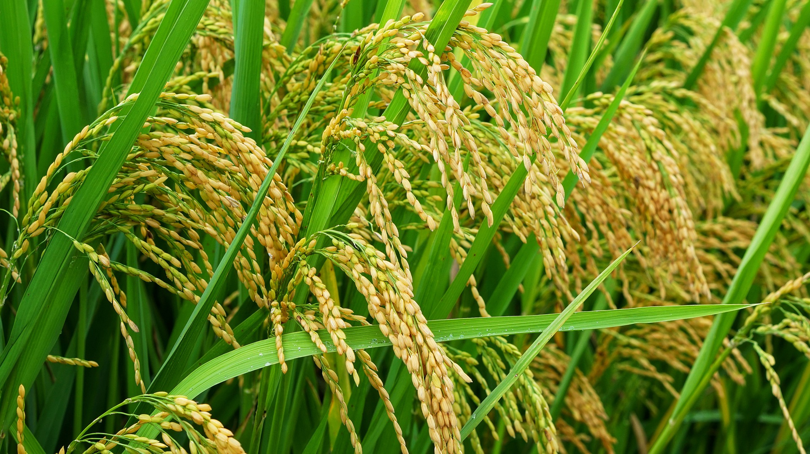
- Jagung: Jagung adalah sumber karbohidrat yang penting di banyak negara. Jagung dapat digunakan untuk makanan manusia, pakan ternak, dan bahan baku industri seperti pembuatan tepung jagung dan sirup jagung.

- Gandum: Gandum adalah bahan dasar untuk produksi berbagai produk roti, pasta, dan sereal. Varietas gandum mencakup gandum keras (untuk roti) dan gandum lunak (untuk pasta).
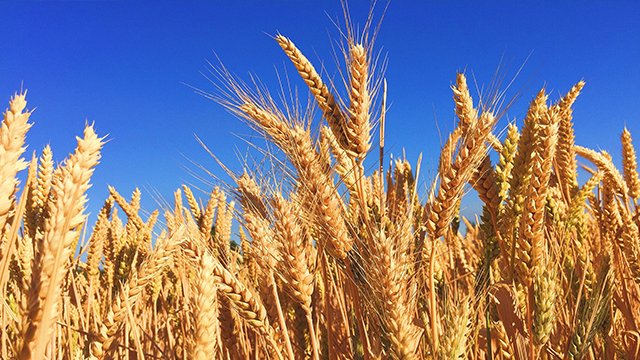
- Kacang-kacangan: Kacang-kacangan seperti kedelai, kacang tanah, dan kacang hijau adalah sumber protein nabati penting. Mereka juga mengandung lemak sehat dan serat.
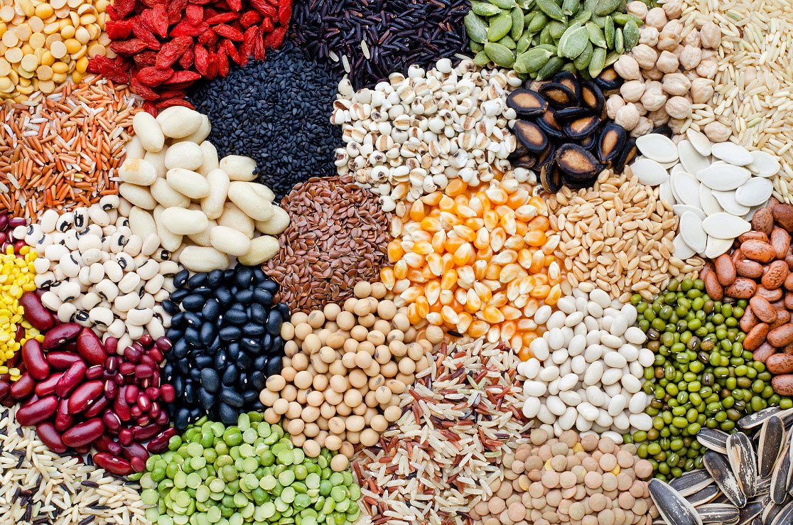
- Sayuran: Sayuran termasuk jenis seperti wortel, brokoli, tomat, selada, dan banyak lainnya. Sayuran merupakan sumber vitamin, mineral, dan serat yang penting dalam makanan manusia.
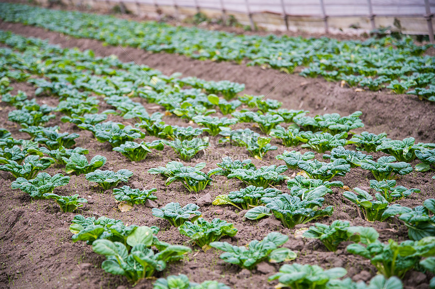
- Buah-buahan: Buah-buahan seperti apel, jeruk, pisang, dan stroberi adalah sumber vitamin C, serat, dan nutrisi lainnya. Mereka juga digunakan dalam berbagai produk makanan.
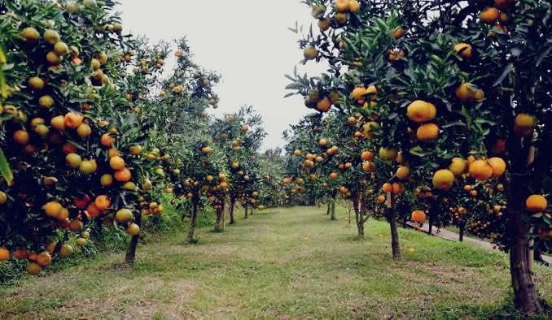
- Kapas: Kapas adalah tanaman yang digunakan dalam produksi serat untuk pembuatan tekstil dan pakaian. Bahan ini juga dapat digunakan dalam produk-produk non-pakaian seperti bahan pelapis.
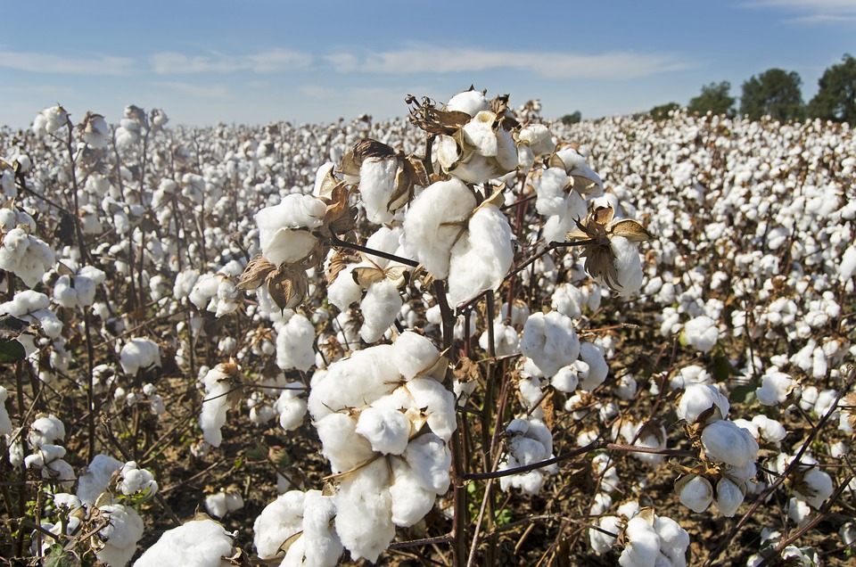
- Tebu: Tebu adalah tanaman yang digunakan untuk produksi gula. Gula ini dapat digunakan sebagai pemanis dalam makanan dan minuman.
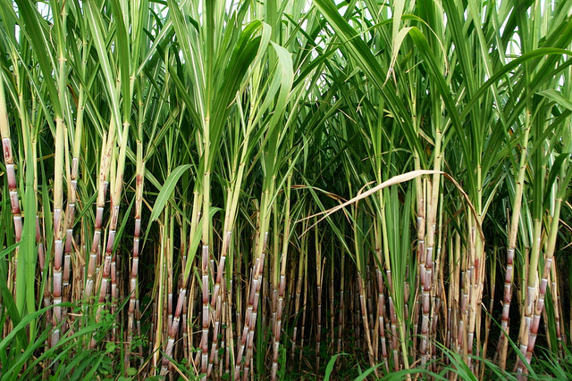
- Teh dan Kopi: Tanaman teh dan kopi menghasilkan minuman yang populer di seluruh dunia. Teh berasal dari daun teh, sementara kopi berasal dari biji kopi yang dipanggang.
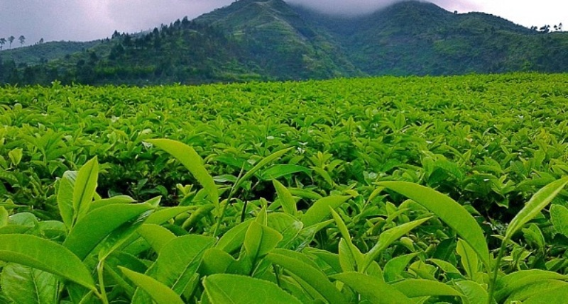
- Beras: Selain padi, beras juga dapat ditanam sebagai tanaman pertanian. Beras adalah salah satu sumber utama karbohidrat dalam makanan di banyak negara.
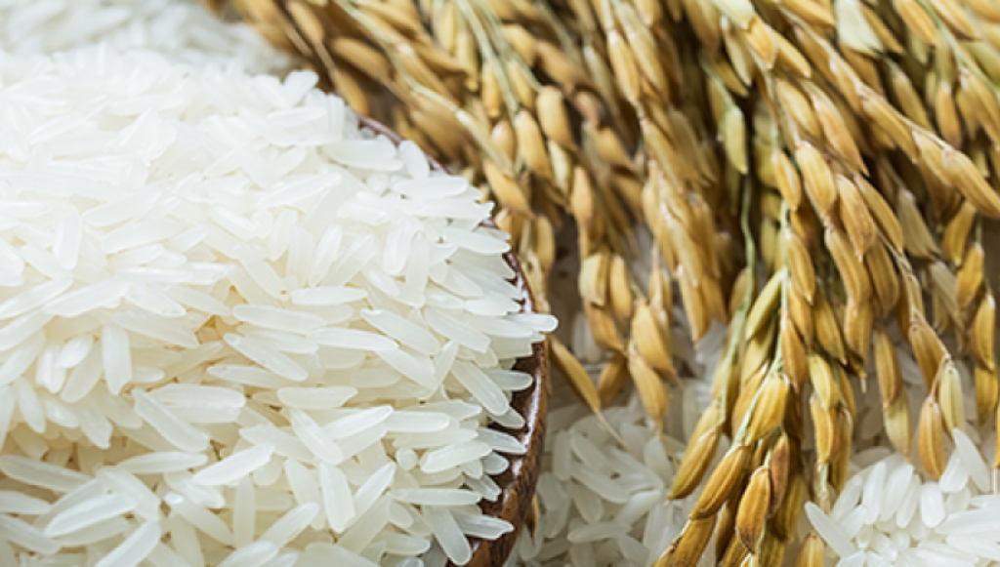
- Rumput Hijau: Rumput hijau digunakan untuk pakan ternak, terutama pada peternakan hewan penggembalaan.
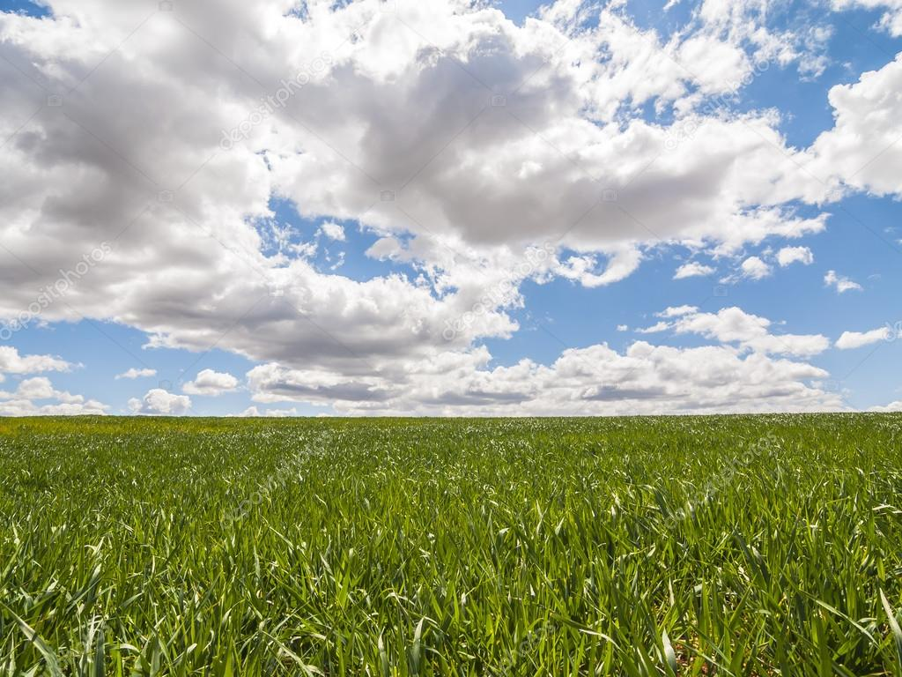
- Tanaman Obat-obatan: Beberapa tanaman, seperti ginseng dan tanaman herbal lainnya, ditanam untuk tujuan pengobatan dan pengobatan alternatif.
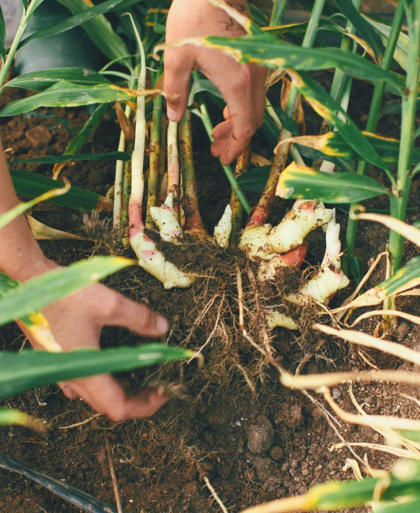
Kesimpulan
Meningkatkan hasil pertanian dengan cara mengoptomalkan lahan yang sudah ada. agar hasil pertanian lebih banyak lagi, harus di beri penambahan pupuk, pemilihan bibit unggul, saluran air, irigasi, dan pembasmian hama yang baik, dll.